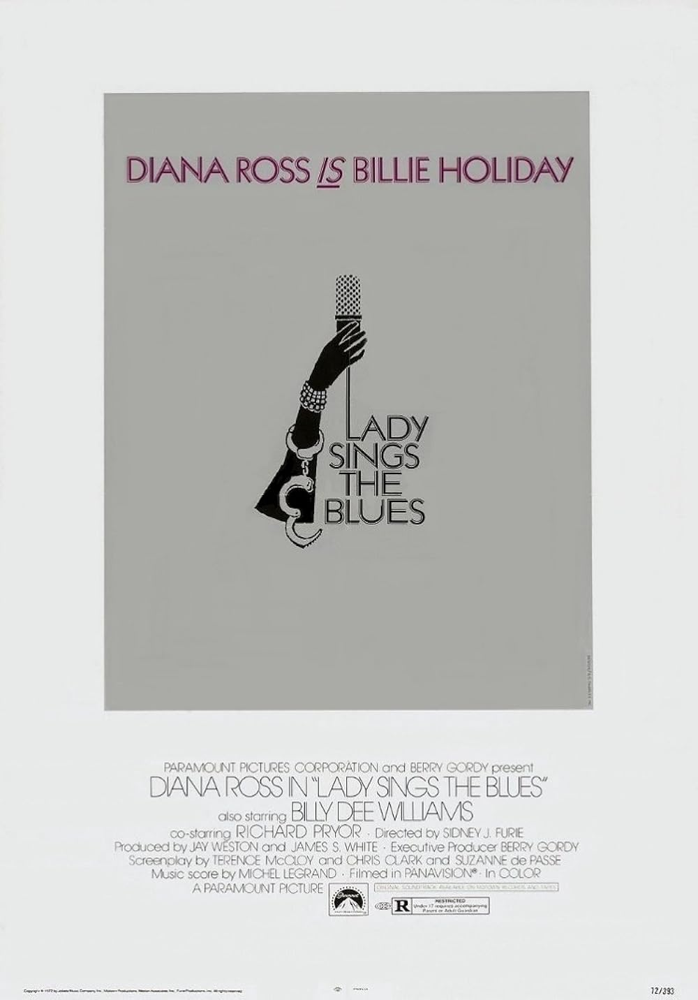

Lady Sings the Blues
45th Academy Awards
(Oscars 1973)
5 Nominations, 0 Awards
| Nominations | ||
|---|---|---|
| Category | Nominees | Result |
| Actress | Diana Ross | Nominated |
| Writing (Story and Screenplay--based on factual material or material not previously published or produced) | Chris Clark, Suzanne de Passe, and Terence McCloy | Nominated |
| Art Direction | Carl Anderson and Reg Allen | Nominated |
| Costume Design | Bob Mackie, Norma Koch, and Ray Aghayan | Nominated |
| Music (Scoring: Adaptation and Original Song Score) | Gil Askey | Nominated |